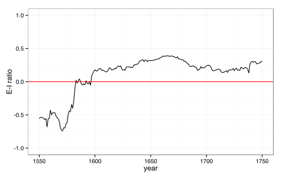
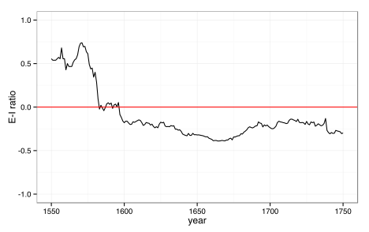

Confabulation in the humanities
It’s a tale as old as the “digital humanities” itself: skeptics rightly asking whether or not we are actually learning anything new by using quantitative approaches to historical questions. This is a legitimate question. But I find that many scholars actually have a great deal of trouble differentiating what, in retrospect, sounds reasonable, from what we actually already knew.
I’ve run in to an odd version of this in presenting my own research. In my dissertation, I explore how the organization of artistic print producers (including designers, plate cutters, and publishers) in the Netherlands shifted between 1500 and 1700, and what these changes may have meant for individual artists and for their works of art. I have powered this research, in large part, though computational network analysis of a large database of prints from this period. Without getting bogged down in the details, this essentially involves measuring how certain network properties, such as overall centralization, or density, or transitivity, change over time. Let’s take a look at two examples.
Example 1
This plot visualizes the changing balance of domestic vs. international connections made by Dutch printmakers. A value of 0 indicates an even balance of connections; positive values indicate majority international connections; negative values indicate majority domestic connections.

What are we seeing? Between 1570–1580, Dutch printmakers shifted very rapidly from making the majority of their connections internally, to now making more than half of them to international collaborators. While the speed of this transition is rather surprising, the shift itself is not. The Dutch had a long history of printmaking through the sixteenth century, dating back to the venerable (and venerated) Lucas van Leyden at the turn of the 1500s. In the late sixteenth century, the northern Netherlands began to enter a “golden age” of economic growth thanks to their unmatched control of international sea trade around the world. As their prosperity increased, many Dutch authors, musicians, and artists sought to add internationalizing elements to their works, as a way of asserting Dutch cultural legitimacy in the broader world of early Modern Europe. Waves of Dutch artists also traveled south to Italy, establishing a sort of artist’s colony in Rome, while prominent Dutch portraitists found patrons in the English court. Thus, it is not surprising to see that Dutch printmakers also turned outward in this period.
Example 2
This plot visualizes the changing balance of domestic vs. international connections made by Dutch printmakers. A value of 0 indicates an even balance of connections; positive values indicate majority international connections; negative values indicate majority domestic connections.

What are we seeing? Around 1575, Dutch printmakers shifted very rapidly from making the majority of their connections internationally, to now making more than half of them to domestic collaborators. While the speed of this transition is rather surprising, the shift itself is not. Many prominent sixteenth-century Dutch printmakers like Cornelis Cort worked extensively with foreign artists and patrons, and the Antwerp print publisher Hieronymus Cock also had a strong influence on northern Netherlandish printmakers, especially in Haarlem. In the late sixteenth century, the northern Netherlands began to enter a “golden age” of economic growth thanks to their unmatched control of international sea trade around the world. New wealth supported a flourishing Dutch art market both in Amsterdam as well as smaller towns like Utrecht and Delft. Now rather than having to turn to international partners to produce prints (a highly collaborative enterprise), Dutch artists, printmakers, and publishers could increasingly work with their own countrymen. Thus, it is not surprising to see that Dutch printmakers turned inward in this period.
Huh?
One of those plots is the actual result based off of my dataset. For the other, I have multiplied the E-I ratio by -1 to essentially give opposite results. Neither results seems particularly surprising, once we’ve constructed a just-so story to rationalize the answers. You’ll have to go look at my actual presentation on this to see the “real” answer (or, at least, the answer as actually derived from my dataset — whether or not this is representative of true historical trends is a fair and fascinating question :)
I suppose the point of this post is to articulate my growing concern that we are so damn good at coming up with post-facto historical explanations to contextualize any given observation, that we are particularly susceptible to confabulating these post-facto rationalizations with the idea that we somehow knew the results of this quantitative work already (and, implicitly, that we didn’t need to waste our time doing it.) If I can come up with two perfectly plausible historical scenarios to explain opposing, hypothetical trends, then we clearly don’t have a settled answer to the question already, and it was entirely worth my time to try and run that humanistic experiment to at least find the actual trend before I began to formulate any conclusions.
In closing, it’s also worth noting that this is distinct from the issue of testing if our just-so explanations for network analysis observations could feasibly return the patterns observed from our data. On this, I heartily recommend Shawn Graham and Scott Weingart, “The Equifinality of Archaeological Networks: An Agent-Based Exploratory Lab Approach,” Journal of Archaeological Method and Theory, December 28, 2014, 1–27, doi:10.1007/s10816-014-9230-y.